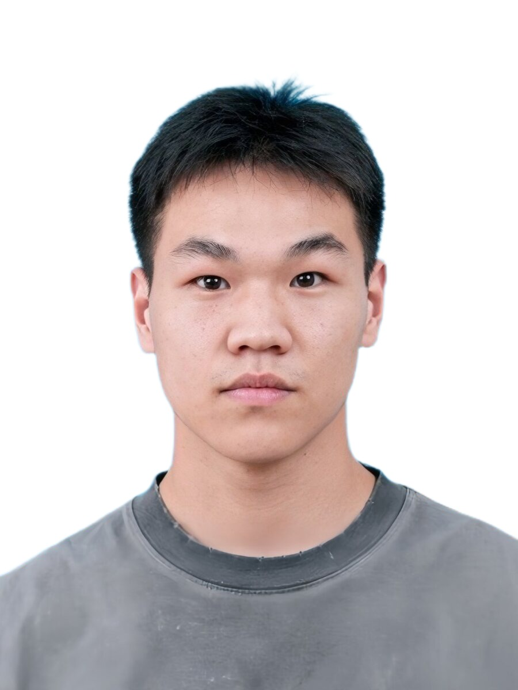

Hi，我是 蒋政雷
AI应用开发 · 算法竞赛 · 全栈实践
向下滚动了解更多 ⬇
Hi，我是 蒋政雷
AI应用开发 · 算法竞赛 · 全栈实践
向下滚动了解更多 ⬇
22岁 · 沈阳航空航天大学 · 计算机科学与技术
高考 583 分 | 2022.09 – 2026.07
全国计算机设计大赛二等奖 · CCF-CSP 全国前 20%
英语六级 488 分，具备基本口语交流能力
主修：数据结构、算法、OS、计网、数据库、软件工程
擅长 AI 编程与大模型应用开发，热爱技术与创新

基于 LangChain + RAG 构建航空零件工艺生成系统
2026.2 – 2026.4 · 工艺相似率 0.93
基于 Dify 搭建课程内容生成 Agent 系统
2026.5 – 2026.7 · 效率提升 6 倍
Python + A* 算法 + Voronoi 图战场建模
全国计算机设计大赛 · 二等奖
C++ + MCTS 蒙特卡洛树搜索
全国计算机博弈大赛 · 三等奖
AI辅助全链路开发：小程序/iOS/Android/Web后台
Uniapp + Vue3 + SpringBoot · 2小时交付
全国计算机设计大赛 · CCF-CSP前20% · 计算机博弈大赛
英语六级 488 · 点击查看详情
本简历页面使用 Claude Code 辅助开发，设计遵循 Apple 极简美学，支持编辑模式自由更新内容。
22 岁，计算机科学与技术专业应届生，具备 AI 应用开发与算法竞赛双重背景。
求职意向：AI应用开发 / 算法工程师 / 全栈开发